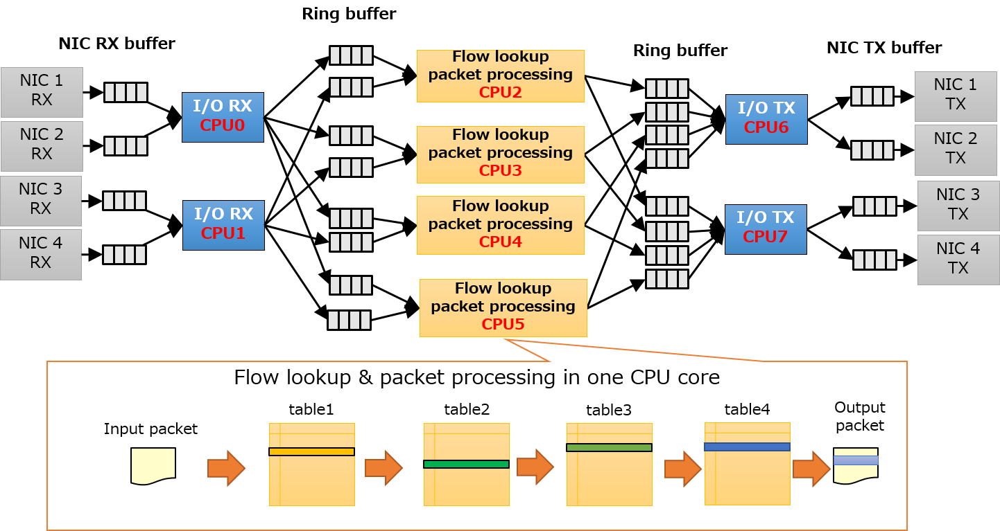
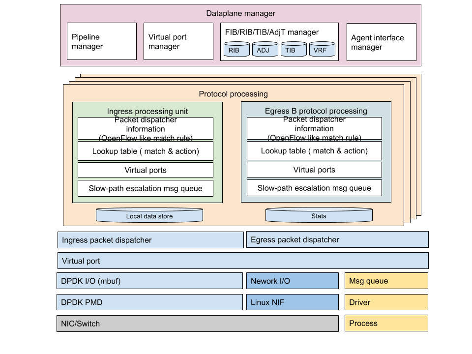
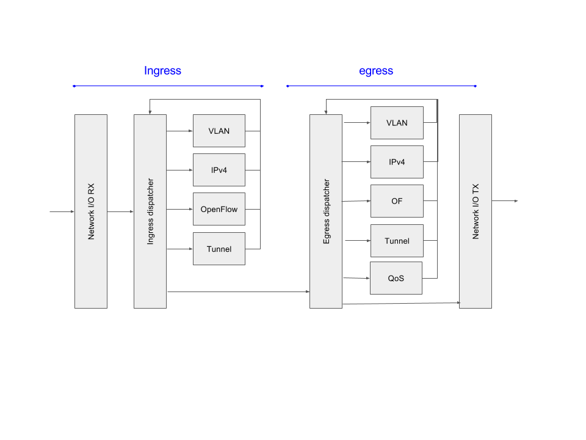

5. Software Dataplane¶
5.1. 目的¶
次期Lagopusの高性能かつ柔軟に複数プロトコルに対応したデータプレーンを構成できるなFast pathを実現する．
- Ethernet, VLAN, IPv4, IPv6などのパケット転送やルーティング
- GRE, IPsecなどのトンネルプロトコルの終端
- Userspace TCP, UDPの実装と連携
- Zero-copy socketの実現
- 新しいプロトコルフォーマットやトンネルプロトコルへの対応
- 柔軟なフロー検索とその検索に対してのアクション
- プロトコル処理のためのパケットやイベントのエスカレーション (Slow-path用機構)
5.2. Lagopus 0.2 dataplane¶
Lagopus 0.2までのデータプレーンでは，ポート番号を中心としたOpenFlowパイプラインをベースに，Network I/Oとパケット処理を分離した構成をとっている．またパケット処理ではtask-completion モデルを採用していた．
Network I/Oと処理を分離したため，柔軟なパケット処理を実現している一方，スレッド間通信のオーバーヘッドやデータのキャッシュの効率上，パケット処理が20MPPS程度に制限されている．また，OpenFlowをベースとしたパイプライン拡張であるためデータプレーンやコントロールプレーンが綺麗に分離されている転送などのネットワーク制御の場合は問題ないが，IPsecやICMPのコントロールパケットのエスカレーションやパケット送出などデータプレーンとスイッチエージェントやデータプレーンとコントロールプレーンが密結合している制御などのルーティング機能に対しては，新しい拡張やモジュールが必要であると考えている．
5.3. 次期Lagopus Packet processing framework¶
次期Lagopusでは，様々なプロトコルフォーマットに対して，高速にパケット検索，転送，処理を実現するためにデータプレーンの構成を拡張し，ディスパッチャを中心とした各プロトコル・パケット処理に対応することとする． 従来のデータプレーンの構成を踏襲し，パケット制御は，仮想ポートと処理プロトコルテーブル指定して処理する
従来まではより汎用的なパイプラインを用いていたたが，トンネルプロトコルやルーティングにおけるパケット処理の性質を考慮し，処理のステージをIngressとEgressに分ける．
 5.3.1. 構成¶
データプレーン用に割り当てられたCPUのうち1コアは，全体のデータプレーンの構成やデータプレーンの資源管理，エージェントとの制御通信路，OSのネットワークスタックへのエスカレーションなどの処理を行うように割り当てる． それ以外のCPUについては，パケット処理用に割り当て，マルチコアCPUを活用し処理スループットやクライアント収容数を向上させるために使用する．
各プロトコル処理部は，以下のDispatcherに登録するパケット分類，パケット処理の関数，エージェントとの制御API，ポート管理のAPIを登録する．